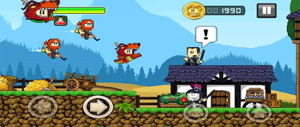

// game-info.dat
DAN
THE MAN
Ação e plataforma em pixel art. Socos, saltos e fases cheias de inimigos — o clássico estilo arcade que Pedro mais curte nos jogos mobile.

Gameplay do Dan the Man
// sobre-o-jogo
Sobre o Dan the Man
Dan the Man é um jogo de plataforma e ação inspirado nos clássicos beat 'em up de fliperama. O jogador avança por fases curtas, enfrenta ondas de inimigos e coleta itens pelo caminho, em um visual retrô com muita cor e pixel art. É exatamente o tipo de experiência rápida e divertida que combina com o formato mobile.
// características
Por que esse jogo é tão bom
Ação de plataforma
Fases dinâmicas com pulos precisos, combos e obstáculos no estilo arcade.
Pixel art clássico
Visual retrô cuidadosamente desenhado, remetendo aos jogos de fliperama.
Jogabilidade rápida
Fases curtas e diretas, perfeitas para sessões rápidas no celular.
Progressão e desafios
Novos inimigos, itens e níveis de dificuldade conforme o jogador avança.